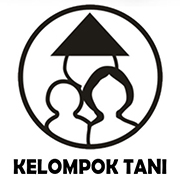
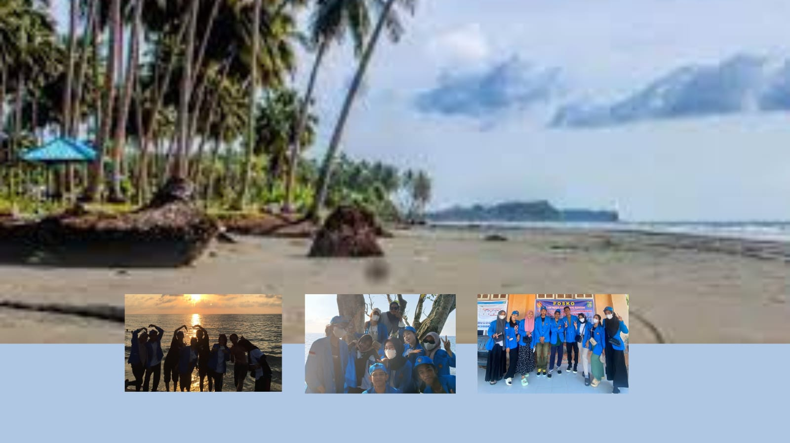

Desa kasoloang Kec. Bambaira dulunya merupakan wilayah daerah tertinggal,
ini terlihat dari kondisi masyarakat masih banyak dibawah garis kemiskinan dan kurangnya sarana
dan prasarana daera ini. melihan kondisi masyarakat didesa kasoloang untuk lebih meningkatkan
dan kemajuan daerahnya.
Desa kasoloang ini berarti "tempat terbenangnya MataHari" sampai saat ini
yang dalam bahasa daerahnya "KASOLOANA" yang kemudian disingkat menjadi KASOLOANG. orang yang
menyakini bahwa setiap ada bencana mau datang didaerah ini, gunung ters ebut dapat meledak
dengan sendirinya tampa ada lahar panas dibawah. Dari keyakinan masyarakat tersebut Kasoloangdapat
dipelihara dan dilestarikan dan tidak boleh digarap untuk perkebunan.
Desa
Kasoloang
Profil
Desa Kasoloang, Kec. Bambaira, Kab. Pasangkayu
Wilayah
Desa Kasoloang
Potensi
Desa Kasoloang
Visi dan Misi
Desa Kasoloang
Lembaga Desa
PKK Desa
Lembaga kemasyarakatan sebagai mitra kerja pemerintah dan organisasi kemasyarakatan lainnya, yang berfungsi sebagai fasilitator, perencana, pelaksana, pengendali dan penggerak pada masing-masing jenjang pemerintahan untuk terlaksananya program PKK.
Karang Taruna
Karang Taruna merupakan wadah pengembangan generasi muda nonpartisan, yang tumbuh atas dasar kesadaran dan rasa tanggung jawab sosial dari, oleh dan untuk masyarakat khususnya generasi muda di wilayah Desa yang bergerak dibidang kesejahteraan sosial.

Kelompok Tani
Kelompok tani adalah kumpulan petani/peternak/pekebun yang dibentuk atas dasar kesamaan kepentingan, kesamaan kondisi lingkungan (sosial, ekonomi, sumberdaya) dan keakraban untuk meningkatkan dan mengembangkan usaha anggota.
Majelis Taklim
tempat melaksanakan pengajaran atau pengajian ajaran Islam.
Sepak Bola
permainan bola yang dilakukan dengan jalan menyepak.
Lembaga Kesejahteraan Masyarakat
Lembaga kesejahteraan masyarakat merupakan organisasi sosial atau perkumpulan sosial yang melaksanakan penyelenggaraan kesejahteraan sosial yang dibentuk oleh masyarakat baik yang berbadan hukum maupun yang tidak berbadan hukum.
WISATA DESA KASOLOANG

PANTAI LANGI BAJO
Wisa Pantai langi bajo di buka pada tahun 2020. dibuka oleh pak desa kasoloang yaitu pak makmur s.sos, pantai ini dinamakan pantai lagi' bajo karena di ambil dari nama pohon yang banyak tumbuh disekitaran sana yaitu pohon lagi' bajo awal awal mulai terbukanya pantai ini begitu banyak pengujungbaik dari
desa itu sendiri mauoun dari desa lain, selan berjalannya waktu akhir tahun 2020 akhir. ada warga sana sakit akibat gangguan dari mahluk gaib akhirnya masyarakat sana melakukan adat untuk ketemtraman bersama.
pada tahun 2021 akhir sampai dengan tahun 2023 bulan september tidak lagi digunakan karna tidak ada pengunjung. namun pada bulan november pantai ini kembali di buka dan diramaikan oleh mahasiswa kkn 106 universitas tadulako kembali
mengembangkan pantai dengan membuatkan arah jalan, gerbang, spot foto tempat sampah. namun kendala saat ini mahasiswa mebul mencukupi dana untuk meberi
air bersi, tempat ibada, wc dan listrik namun usulan tersebut di respon baik oleh masyarakat sana dan aparat desannya.
PENANGKARAN PENYU
penangkarang penyu pertama kali di lakukkan oleh pak desa kasoloang yaitu makmur s.sos. yang dimana penakaran penyu tersebut sudah dilakukan kuran lebih tiga tahun
yang dimana dalam satun induka bisa menhasilkan telur sekitar 150 butir persatu indukan. sehingga pada tahun pertama yaitu 2021 pak desa melakukan peranakann telur sekitar 600 butir telur
dan yang menetas menhampiri 500 ekor kemudin di tahun 2022 ada sekitar 800 telur dan yang menetas hanya sekitar 600 san kemudin melangkah ke tahun ke tiga yaitu 2023 pak desa merasa adanya kesalahan tekniks
karena dari 1000 lebih telur, dan yang menetas kurang dari 500 ekor. namun perlu kita ketahui ternyata induka penyu tersebut tidak bertelur disetiap bulannya. namun memiliki waktu tertentu yaitu dari bulan 3 sampai bula 7
namun kendala dari pak desa tersebut kurangnya teknisi yang tau persis terkait penyu tersebut.
UMKM DESA
UMKM DESA KASOLOANG
jual campuran
jual Keripik pisan
jual beli coklat
jual keperluan dapur
jual sayuran
usaha menjahit
usaha gula merah
tabung garis
jual minyak kelapas
Wilayah
Desa Kasoloang
Desa Kasoloang sama dengan wilayah lain, yaitu tropis (hujan dan kemarau). Letak desa kasoloang secara geografis wilaya desa kasoloang kec, bambaira terletak dibagian selatan wilayah. yaitu wilayah kecematan bambaira dengan batas wilayah. sebela utara desa
Bambaira, sebelah selatan Desa Rondomayang kec. Bambalamotu, sebelah baratSelat Makassar, Sebelah Timur Desa Kalukunangka.
LUAS WILAYAH
Luas wilayah desa kasoloang adlah 14.25 km yang terdiri dari 7 dusun diantaranya iyalah :
Kasoloang, Mesanga, Torenda, Binoli, Bantalaka, Durian Guni, Pembondo I,
Potensi
Desa Kasoloang
Potensi yang dimilliki adalah dalam bidang pertanian, perkebunan, nelayan dan perternakan.
Visi dan Misi
Desa Kasoloang
VISI : Terbangunnya tata kelola pemerintahan desa yang baik dan bersi guna mewujudkan desa kasoloangyang mandiri dan berkelanjutan,
yang memiliki sumber daya manusia (SDM) yang unggul, penataan desayang berkualitas, struktur ekonomi, yang berdaya saing merata dan berkelanjutan."
MISI : Untuk terwujudnya visi tersebut ditetapkan upaya/cara atau misi yang akan mendukung pencapaian visi yaitu:
1. Menciptakan penataan desa yang berkualitas melalui program tata
ruang desa berbasis produktifitasekonomi dan inklusi,
2. Membagun kualitas SDM yang unggul, cerdas dan berintegrasi
melalui programpeningkatan sumberdaya manusia,
3. Membuka akses ekonomi desa dalam rangka pemerataan kesejatraan
dan keadilan bagi warga desa melalui program pembagunan badan usaha
milik desa(BUMDesa),
4. Meningkatkan kwalitasinfrastruktur sarana dan prasarana desa melalui
program peningkatan sarana dan prasarana umum berbasis teknologi ramahlingkungan,
5. Menciptakan tatakelola pemerintahan desa yang baik,bersih, SdM
aparatur desa. serta tidak melakukan pungutan pelayanan administasi dari masyarakat,
6. Meningkatkan pelayanan publik dan ketersediaan informasi, melalui
program internet desa,
7. Meningkatkan mutu layanan kesehatan masyarakatdidesa melalui
programgerakan desa sehat,
8. Meningkatkan kwalitas pendidikan, baik formal maupun nonformal
melalui program gerakan desa cerdas,
9. Meningkatkan hasil produksi pertanian, perkebunan, perikanan tambak,
dan perternakan melalui programgerakan mandiri pangan,
10. Menguatkan lembaga ke-agamaan dalam rangka membagun spritualitas
dan berperan dalam aspek sosial ekonomi masyarakat,
11. Menguatkkan Lembaga Organisasi kepemudaan melalui program peningkatan
kwalitas SDM pengurus karang taruna,
12. Rabat Bahu jalan
Kontak Kami
Silakan menghubungi kami melalui form di bawah ini:
Wilayah
Desa Kasoloang
Desa Kasoloang sama dengan wilayah lain, yaitu tropis (hujan dan kemarau). Letak desa kasoloang secara geografis wilaya desa kasoloang kec, bambaira terletak dibagian selatan wilayah. yaitu wilayah kecematan bambaira dengan batas wilayah. sebela utara desa
Bambaira, sebelah selatan Desa Rondomayang kec. Bambalamotu, sebelah baratSelat Makassar, Sebelah Timur Desa Kalukunangka.
LUAS WILAYAH
Luas wilayah desa kasoloang adlah 14.25 km yang terdiri dari 7 dusun diantaranya iyalah :
Kasoloang, Mesanga, Torenda, Binoli, Bantalaka, Durian Guni, Pembondo I,
Potensi
Desa Kasoloang
Potensi yang dimilliki adalah dalam bidang pertanian, perkebunan, nelayan dan perternakan.
Visi dan Misi
Desa Kasoloang
VISI : Terbangunnya tata kelola pemerintahan desa yang baik dan bersi guna mewujudkan desa kasoloangyang mandiri dan berkelanjutan,
yang memiliki sumber daya manusia (SDM) yang unggul, penataan desayang berkualitas, struktur ekonomi, yang berdaya saing merata dan berkelanjutan."
MISI : Untuk terwujudnya visi tersebut ditetapkan upaya/cara atau misi yang akan mendukung pencapaian visi yaitu:
1. Menciptakan penataan desa yang berkualitas melalui program tata
ruang desa berbasis produktifitasekonomi dan inklusi,
2. Membagun kualitas SDM yang unggul, cerdas dan berintegrasi
melalui programpeningkatan sumberdaya manusia,
3. Membuka akses ekonomi desa dalam rangka pemerataan kesejatraan
dan keadilan bagi warga desa melalui program pembagunan badan usaha
milik desa(BUMDesa),
4. Meningkatkan kwalitasinfrastruktur sarana dan prasarana desa melalui
program peningkatan sarana dan prasarana umum berbasis teknologi ramahlingkungan,
5. Menciptakan tatakelola pemerintahan desa yang baik,bersih, SdM
aparatur desa. serta tidak melakukan pungutan pelayanan administasi dari masyarakat,
6. Meningkatkan pelayanan publik dan ketersediaan informasi, melalui
program internet desa,
7. Meningkatkan mutu layanan kesehatan masyarakatdidesa melalui
programgerakan desa sehat,
8. Meningkatkan kwalitas pendidikan, baik formal maupun nonformal
melalui program gerakan desa cerdas,
9. Meningkatkan hasil produksi pertanian, perkebunan, perikanan tambak,
dan perternakan melalui programgerakan mandiri pangan,
10. Menguatkan lembaga ke-agamaan dalam rangka membagun spritualitas
dan berperan dalam aspek sosial ekonomi masyarakat,
11. Menguatkkan Lembaga Organisasi kepemudaan melalui program peningkatan
kwalitas SDM pengurus karang taruna,
12. Rabat Bahu jalan